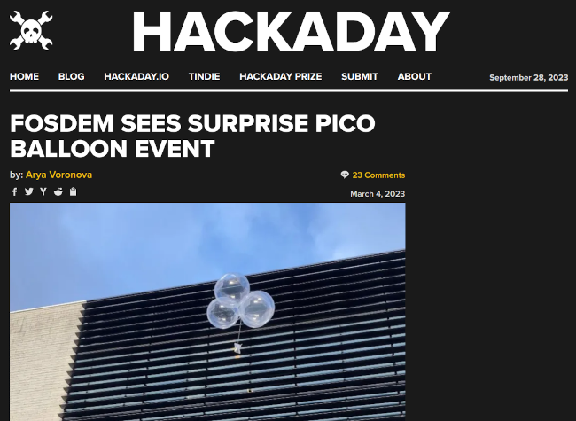

A Small Update On TinyGo
Gophercon 2023 Edition
Ron Evans - @deadprogram
Ron Evans (@deadprogram)
Technologist For Hire
hybridgroup.com
Software that makes your hardware work
tinygo.org
Go compiler for small places
Current stats
13k+ stars
780+ forks
150+ contributors
99 different boards supported
TinyGo Release 0.30 Highlights
LLVM 16
More reflection!
GOOS=wasip1 GOARCH=wasm
Now that "Big Go" supports wasi, do we still need TinyGo?
package main
func main() {
println("Hello world!")
}
hello.go
1389512 sep 28 06:43 hello-min-go-1.21.1.wasm
81199 sep 28 06:43 hello-min-tinygo-0.30.wasm
17x smaller
package main
import (
"fmt"
"io/ioutil"
)
func main() {
fmt.Println("Hello world!")
helloWorldAsBytes := []byte("Hello world!\n")
err := ioutil.WriteFile("./helloworld.txt", helloWorldAsBytes, 0644)
if err != nil {
panic(err)
}
}
hello-wasi.go
wasmbyexample.dev
2157722 sep 28 06:44 hello-wasi-go-1.21.1.wasm
414176 sep 28 06:44 hello-wasi-tinygo-0.30.wasm
5.2x smaller
TinyGo in the world
TinyGo Keyboard
Takasago (@sago35)
github.com/sago35/tinygo-keyboard

Umeda.go - TinyGo Keyboard Workshop
sago35.hatenablog.com/entry/2023/05/18/225618
u-root
github.com/u-root/u-root

FPV head tracker
Yurii Soldak
github.com/ysoldak/HeadTracker
Performance Evaluation of C/C++, MicroPython, Rust and TinyGo Programming Languages on ESP32 Microcontroller
Department of Computer Sciences, Kaunas University of Technology, Lithuania
www.mdpi.com/2079-9292/12/1/143
The results of this study reveal that, though the C/C++ programming language is widely believed to be the most efficient for embedded programming, that is not always the case....in a few cases the C/C++ algorithms were outperformed by algorithms implemented in TinyGo and Rust. Moreover, the TinyGo algorithms demonstrated jitter-free execution, making this language more preferable for hard real-time applications.
Webassembly
WASI
Fastly Compute@Edge Go SDK
github.com/fastly/compute-sdk-go
Spin 1.5
Fermyon
developer.fermyon.com/spin
Higress - Next-generation Cloud Native Gateway | 下一代云原生网关
AliBaba
github.com/alibaba/higress/
wazero
Tetrate Labs
wazero.io
Timecraft
Stealth Rocket
docs.timecraft.dev
kube scheduler WASM extension
github.com/kubernetes-sigs/kube-scheduler-wasm-extension
Performance
Q: Why do we use TinyGo instead of normal Go? A: We found re-creating an instance per hook costs 45us in TinyGo, yet over 4ms in Go.
Back to the hardware
TinyGlobo 1/2
tinyglobo.com


Gopher Badge
Daniel Esteban (@_CONEJO)
gopherbadge.com/